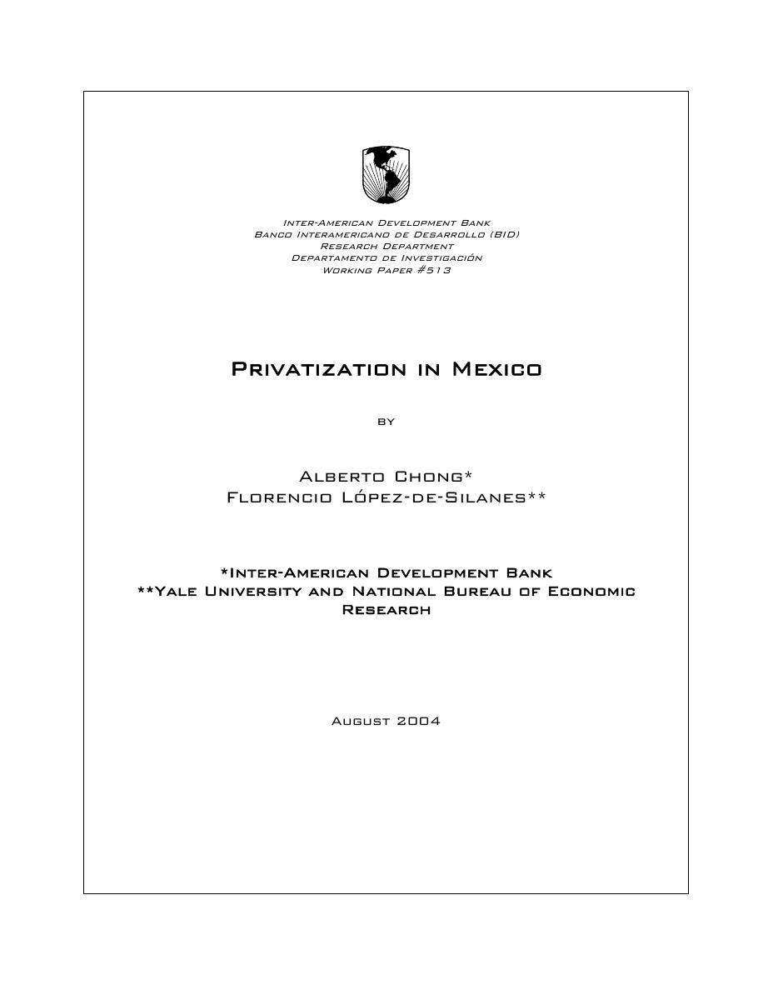
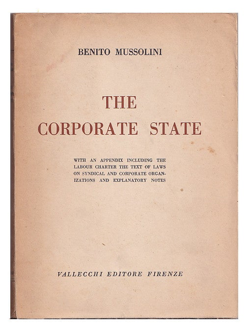

13:38 · 3 OPERE
La privatizzazione dello Stato.
Il filo del discorso
Dr Divago propone una nuova secolarizzazione dello Stato, intesa come separazione del potere pubblico dalle grandi concentrazioni economiche. Per costruire l’analogia ripercorre il rapporto storico fra autorità politica e Chiesa e richiama l’avvertimento di Eisenhower sul complesso militare-industriale. Il centro della lettura riguarda le privatizzazioni: il caso messicano, il discorso di Mario Draghi sul Britannia e le trasformazioni delle imprese pubbliche europee diventano esempi del mutamento dei confini fra gestione statale e capitale privato.
Leggi la sintesi completaRiduci la sintesi
Un contributo di Palcic e Reeves accompagna l’osservazione sul ripensamento del ruolo dello Stato nei servizi essenziali. Il relatore contesta soprattutto il criterio che misura l’efficienza pubblica soltanto attraverso redditività e risultati finanziari. Trasporti, sanità e istruzione sono invece presentati come condizioni concrete di libertà e uguaglianza fra cittadini. La critica si estende ai passaggi di dirigenti fra istituzioni e imprese, alla tecnocrazia e alla possibile esternalizzazione delle funzioni legislative. Nella conclusione, il richiamo allo Stato corporativo di Mussolini e alle misure sanitarie del 2021 accentua la polemica. Il parallelismo con il fascismo e la valutazione dei provvedimenti contemporanei restano interpretazioni del relatore; non costituiscono, per la sola analogia, una dimostrazione storica o giuridica.
I libri nel discorso

Privatization in Mexico
Note sul riferimento
Prima pagina del working paper: Inter-American Development Bank · Working Paper 513 · agosto 2004
Prima pagina del documento ufficiale, con titolo, autori, istituzione, numero 513 e data. Non è una copertina commerciale.
Numero 513 e istituzione sono espliciti; la traduzione dell’apertura identifica Privatization in Mexico.
Privatisation in Europe
Identificazione probabile
Note sul riferimento
Copertina del volume Privatisation in Ireland: Palgrave Macmillan · Privatisation in Ireland · 2011
Copertina autentica del volume di Palcic e Reeves che comprende il capitolo Privatisation in Europe, pp. 8–27. Il titolo dell’immagine è quello del volume, non di una monografia separata sul complesso dell’Europa.
I due autori, il 2011 e l’apertura del contributo sulle privatizzazioni europee consentono il riscontro con il capitolo; il titolo del volume non è pronunciato.

Lo Stato corporativo
Identificazione probabile
Note sul riferimento
Copertina della traduzione inglese, 1936: Vallecchi · The Corporate State · traduzione inglese, 1936
Fotografia autentica della brossura inglese The Corporate State, Vallecchi Editore Firenze, dall’esemplare Arundel Books catalogato 1936. Il 1933 pronunciato nel video è distinto dall’anno di questa raccolta e si riferisce al discorso sul corporativismo.
Mussolini, Lo Stato corporativo e il 1933 sono espliciti; rimane da distinguere il discorso del 1933 dalla raccolta pubblicata nel 1936.